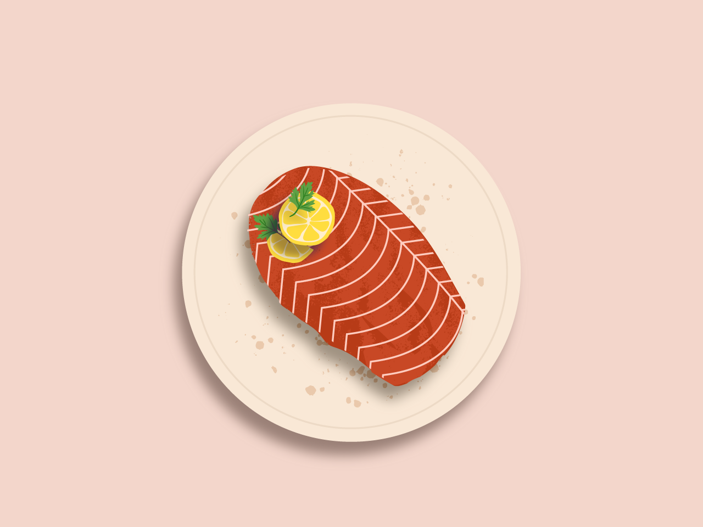

BAKED SALMON WITH GINGER SOY GLAZE

Ingredients
- 2 ½ pounds whole salmon fillet
- 4 TBSP vinegar
- 4 TBSP soy sauce
- 2 TBSP honey
- 2 TBSP sesame oil
- 6 cloves garlic, minced
- 1 TBSP grated ginger
- ¼ tsp freshly ground black pepper
- 1 pinch of salt
Method
- Cut the salmon filet into 3-4 pieces.
- Finely grate the ginger.
- Finely chop the garlic.
- Add ginger and garlic to a bowl.
- In the same bowl mix together the vinegar, soy sauce, honey, sesame oil, salt , and black pepper.
- Coat the salmon with the marinade, cover with plastic wrap and let it chill in the fridge for at least half an hour.
- Preheat oven to 350F, with rack on middle position
- Transfer salmon to a baking sheet. Evenly distribute marinade over salmon. Bake for 10 minutes (if your salmon is extra thick, or very cold, you may bake an additional 3-5 minutes.)
- Enjoy!